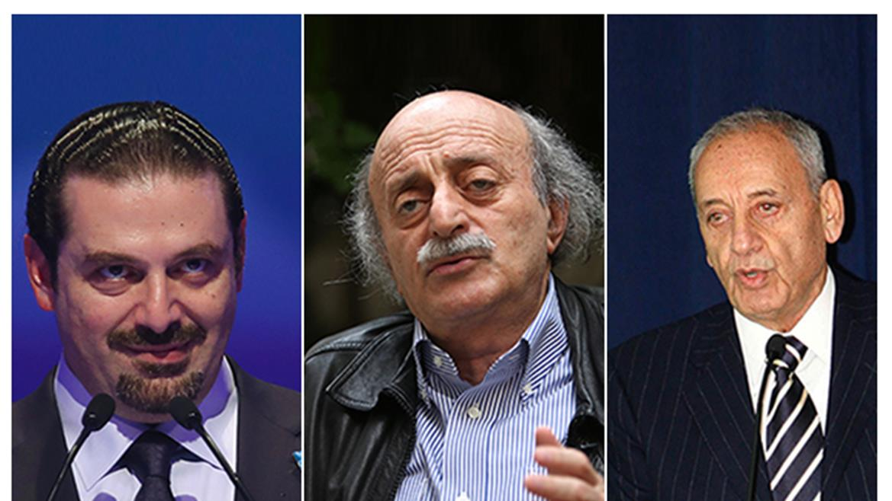

ترشيحات الرئاسة اللبنانية: من الفراغ إلى المؤتمر التأسيسي
الخميس، 21 أبريل 2016

لم تستطع القوى اللبنانية انتخاب رئيس جديد للجمهورية منذ عام 2014 وتعيش البلاد حالة فراغ دستوري قد تجعل من لبنان دولة فاشلة أو قد تقوده نحو تعديل اتفاق الطائف أو استبدال آخر به يعيد رسم المشهد السياسي اللبناني وعلاقاته الداخلية والخارجية.
ملخص:
انتهت
ولاية رئيس الجمهورية ميشال سليمان، عام 2014، لتكشف أن التبدل العميق في
التحالفات السياسية المحلية بعد اغتيال الحريري، عام 2005، والتحولات الإقليمية
بالثورة السورية، عام 2011، قد أدخلت لبنان في جمود سياسي يحول دون انتخاب رئيس
جديد. فاللبنانيون منقسمون على بعض المكاسب الداخلية والخيارات الإقليمية، فهناك
قوى 8 آذار من مؤيدي سوريا وإيران وبمقابلهم خصومهم من قوى 14 آذار. ولكن
بالموازاة هناك خلاف آخر مضمَر يتجاوز هذا الانقسام ويدور حول الطائف؛ حيث يميل
سعد الحريري (8 آذار) ونبيه بري (14) نحو استمرار اتفاق الطائف وأن لا يُمَسَّ
جوهره، في حين يراهن حزب الله مع زعيم التيار الوطني الحر، ميشال عون، على تعديل
الطائف عميقًا أو استبدال مؤتمر تأسيسي آخر به. وبسبب التناقضات التي نشأت عن وجود
هذا الخلاف المركب في لحظة سياسية واحدة، لم تستطع كل من 8 أو 14 آذار الإجماع على
مرشح واحد للرئاسة؛ ما يضعها جميعًا أمام اختبار صعب، إمَّا انتخاب رئيس للطائف أو
رئيس لمؤتمر ما بعد الطائف أو تعديله.